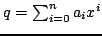
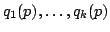
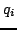

Usage
compose(p)(q)
| Parameter | Type | Description |
|---|---|---|
| p, q | % | Polynomials |
Returns
Returns
where .
Remarks
If you want to compute  for several 's, use the curried version as follows: f := compose p; for i in 1..k repeat r.i := f(q.i); , since the various calls to f will share a table of powers of.